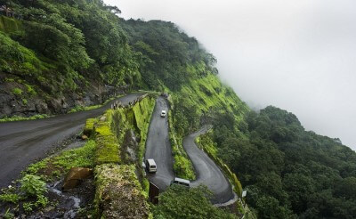

How To Reach Bhandardara

By Road
Mumbai is 180km from Bhandardara and can be accessed through National Highway 3 (NH3) followed by a right turn from Ghoti toll post. Another 30 km. from Ghoti and you arrive in Bhandardara.
The distance from Pune is 175 km. and can be accessed through NH 50 upto Ghargaon, from Ghargaon take the State highway (SH 21) till Bhandardara.
By Flight
The nearest airport is the Mumbai International Airport which is 177km. away.
Taxis can be hired from the airport to Bhandardara.
By Train
Igatpuri is the nearest railway station which lies on the Mumbai - Nashik rail route and is 45kms from Bhandardara, from there one can take a state transport bus or a taxi.